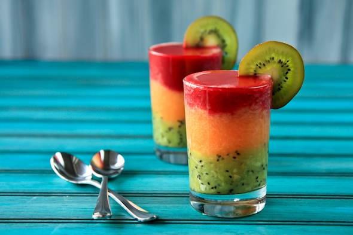

 আইস টি
উপকরণঃ
চা পাতা – ১ চা চামচ, পানি – ২ কাপ, চিনি-২ টেবিল চামচ, লেবু ১ টি ।
প্রণালীঃ
পানি ফুটানোর পর চা পাতা দিয়ে আরও মিনিট খানেক ফুটাও। চায়ের রং ছেঁকে আরও ২ কাপ পানি, চিনি ও লেবুর রস মিশাও। রেফ্রিজারেটরে রাখো। বেশী করে বরফকুঁচি দিয়ে পরিবেশন করো।